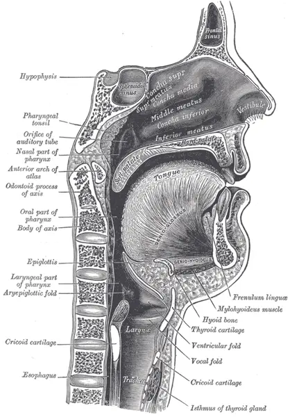

LOT_023 — S1.7 Difficulté à avaler, étouffement — Phase A : monographie du SSP et dix diagnostics différentiels
Un patient qui avale mal souffre soit d’un défaut de transfert du bol vers l’œsophage, soit d’un obstacle ou d’un trouble moteur œsophagienS6. Le médecin écarte d’abord le corps étranger des voies aériennes, l’impaction œsophagienne complète et l’AVC aigu, qui tuent ou laissent des séquelles en minutes ou en heuresS5S7S10. Il classe ensuite la plainte par niveau, puis il cherche la cause par l’endoscopie, l’exploration de la déglutition ou la manométrieS6.
1. Définition
L’UEG et l’ESNM définissent la dysphagie oropharyngée comme un trouble de la déglutition qui empêche de faire passer le bol, sûrement et efficacement, de la bouche à l’œsophageS6. Elles définissent la dysphagie œsophagienne comme une difficulté d’avaler ressentie derrière le sternum, due à une anomalie anatomique, mécanique ou fonctionnelle de l’œsophage ou de son sphincter inférieurS6. L’étouffement désigne l’obstruction des voies aériennes par un corps étranger, qui empêche l’air de passer et menace la vie en quelques minutesS8S5.
2. Épidémiologie (Suisse, puis Europe)
La dysphagie touche 10 à 20 % de la population générale, et la dysphagie oropharyngée atteint 48,1 % des personnes âgées et 55,4 % des patients après un AVCS6. À Genève, le registre suisse des AVC compte 127,0 premiers AVC pour 100 000 habitants par an, et plus de la moitié des AVC aigus s’accompagnent d’une dysphagieS11S10. Ces deux chiffres placent la dysphagie après AVC en tête de la liste, devant la maladie de Parkinson, qui touche plus de 15 000 personnes en SuisseS26.
La fréquence de chaque diagnostic fixe l’ordre des dix monographies ; la gravité ajoute ensuite trois rangs d’exclusion, E1 à E3. Le cancer de l’œsophage, rare mais grave, compte environ 450 nouveaux cas par an chez l’homme et 140 chez la femme en SuisseS16. Les limites de ces données interdisent de comparer directement une incidence islandaise, britannique ou danoise avec une prévalence suisse.
Fréquence et gravité : pourquoi cet ordre
| Rang | Diagnostic | Donnée de fréquence | Source |
|---|---|---|---|
| DX.1 🚩 E3 | Dysphagie oropharyngée après AVC | Plus de 50 % des AVC aigus ; 127,0 premiers AVC pour 100 000 habitants par an à Genève. | S10S11 |
| DX.2 | Dysphagie de la maladie de Parkinson | Dysphagie rapportée par 35 % des patients et objectivée chez 82 % d’entre eux. | S12 |
| DX.3 🚩 E2 | Impaction alimentaire œsophagienne | Incidence de 25 pour 100 000 habitants par an en Islande. | S13 |
| DX.4 | Sténose œsophagienne peptique | Sténose œsophagienne : 1,1 pour 10 000 personnes-années, dont 68 % de sténoses peptiques. | S14 |
| DX.5 | Œsophagite à éosinophiles | Incidence adulte de 7,7 pour 100 000 personnes-années ; prévalence de 34,4 pour 100 000. | S15 |
| DX.6 | Cancer de l’œsophage | Environ 450 cas par an chez l’homme et 140 chez la femme en Suisse. | S16 |
| DX.7 | Achalasie | Incidence de 2,2 pour 100 000 personnes et prévalence de 15,3 pour 100 000 aux Pays-Bas. | S18 |
| DX.8 | Diverticule de Zenker | Incidence des formes opérées de 0,57 pour 100 000 par an en Norvège centrale. | S20 |
| DX.9 | Myasthénie auto-immune | Prévalence de 18,56 à 23,42 pour 100 000 en Scandinavie et en Finlande. | S21 |
| DX.10 🚩 E1 | Obstruction aiguë des voies aériennes par corps étranger | Arrêt cardiaque par corps étranger : 0,78 pour 100 000 personnes-années au Danemark. | S22 |
Le rang de fréquence décide de l’ordre de lecture, tandis que le rang E décide de l’ordre d’exclusion au lit du maladeS5S7S10. Le corps étranger des voies aériennes passe donc en premier dans l’arbre décisionnel, alors qu’il ferme la liste des fréquences.
Limites des chiffres
- Les chiffres de dysphagie dépendent de la méthode : les patients parkinsoniens rapportent une dysphagie dans 35 % des cas, mais l’examen objectif la retrouve dans 82 %S12.
- Cet écart montre que le patient ne signale pas toujours sa gêne ; le médecin doit donc la rechercher activement chez le malade à risqueS12.
- La série islandaise des impactions retrouve une sténose dans 45 % des cas, une hernie hiatale dans 22 % et une œsophagite à éosinophiles dans 16 %S13.
- L’incidence des sténoses a baissé entre 1994 et 2000, en même temps que l’usage des inhibiteurs de la pompe à protons augmentait en soins primaires britanniquesS14.
- L’incidence et la prévalence de l’œsophagite à éosinophiles augmentent nettement dans les études en population des pays développésS15.
- Le bpa recense 135 décès par étouffement accidentel par an en Suisse, sans distinguer les corps étrangers alimentaires des autres causesS23.
- La dysphagie oropharyngée touche 72,4 % des patients déments, ce qui place la démence parmi les terrains à dépister activementS6.
- Chez les témoins sans Parkinson, la dysphagie atteint 9 % à l’interrogatoire et 23 % à l’examen objectif, soit un risque relatif de 3,2 chez les parkinsoniensS12.
- L’incidence de l’œsophagite à éosinophiles atteint 6,6 pour 100 000 personnes-années chez l’enfant, proche de celle de l’adulteS15.
- L’Angleterre retrouve une incidence d’achalasie de 1,99 pour 100 000, proche de la série néerlandaise, ce qui renforce l’estimation européenneS19S18.
Le cancer de l’œsophage en Suisse reste le diagnostic grave qu’une dysphagie progressive doit faire exclure, car sa survie dépend du stadeS16. Le corps étranger des voies aériennes reste rare, mais il tue vite, ce qui justifie son rang d’exclusion E1 malgré sa fréquence faibleS22S23.
Cancer de l’œsophage : chiffres suisses et européens
- Entre 2013 et 2017, la Suisse a enregistré en moyenne environ 450 nouveaux cas par an chez l’homme et 140 chez la femmeS16.
- La survie relative à cinq ans atteint 24 % chez l’homme et 32 % chez la femme, ce qui fait du diagnostic précoce un enjeu majeurS16.
- Le cancer de l’œsophage cause environ 340 décès par an chez l’homme et 110 chez la femme en SuisseS16.
- Dans l’Union européenne, la mortalité standardisée atteint 4,01 pour 100 000 hommes et 0,82 pour 100 000 femmes entre 2015 et 2019S17.
- Le carcinome épidermoïde reste le type histologique le plus fréquent, mais l’adénocarcinome augmente dans les pays à revenu élevéS17.
Corps étranger des voies aériennes : chiffres
- Au Danemark, l’arrêt cardiaque extrahospitalier par corps étranger atteint 0,78 pour 100 000 personnes-années entre 2016 et 2022S22.
- Parmi ces patients, 24 % ont déjà retrouvé une circulation spontanée à l’arrivée des secours, et la survie à 30 jours atteint 30 %S22.
- Les témoins n’interviennent que dans 26 % des cas, ce qui plaide pour former l’entourage aux gestes de désobstructionS22.
- En Suisse, le bpa compte en moyenne 135 décès par étouffement accidentel par an, avec une hausse de 3 décès par anS23.
3. Physiopathologie
Avaler exige de croiser la voie aérienne sans y laisser entrer le bol ; la base anatomo-fonctionnelle explique ce croisement sur une coupe réelle. Un générateur central situé dans la moelle allongée déclenche et minute la séquence, puis distribue la commande aux motoneurones de la déglutitionS24. Le cortex moteur des deux hémisphères représente les muscles de la déglutition, avec une asymétrie qui explique la dysphagie après un AVC pourtant unilatéralS25.
Base à connaître : le carrefour aérodigestif et sa commande
Coupe sagittale : le carrefour où l’air et le bol se croisent. Planche anatomique de Gray, figure 994, domaine publicS27.

Lisez d'abord seul ce cliché (coupe sagittale : le carrefour où l’air et le bol se croisent) : cherchez vous-même le signe.
La copie annotée (coupe sagittale : le carrefour où l’air et le bol se croisent) numérote les repères décrits ci-dessous.
- 1. Le repère 1 montre le voile du palais, qui sépare la bouche du nasopharynx.S27
- 2. Le repère 2 montre la base de la langue, qui propulse le bol vers le pharynx.S27
- 3. Le repère 3 montre l’épiglotte, qui bascule au-dessus de l’entrée du larynx.S27
- 4. Le repère 4 montre le larynx, que le bol doit éviter.S27
- 5. Le repère 5 montre la jonction pharyngo-œsophagienne, au niveau du cartilage cricoïde.S27
- 6. Le repère 6 montre l’œsophage, situé en arrière de la trachée.S27
Ce que l'image décide. Le bol croise la voie aérienne au pharynx, si bien qu’un défaut de fermeture du larynx explique la fausse route. Un obstacle situé sous le repère 6 expliqueS27 au contraire le blocage rétrosternal.

La phase orale prépare le bol par la mastication, le contient, puis le propulse vers le pharynx avec la langueS2. La phase pharyngée transfère le bol en fermant le larynx et en ouvrant le sphincter supérieur de l’œsophage ; la phase œsophagienne le conduit ensuite par péristaltisme jusqu’à l’estomacS2S6.
Le générateur central réunit deux groupes de neurones : le groupe dorsal, dans le noyau du tractus solitaire, déclenche, façonne et minute la séquenceS24. Le groupe ventrolatéral distribue ensuite cette commande aux différents groupes de motoneurones, si bien que la déglutition reste un réflexe séquencé même quand le cortex la déclencheS24.
Hamdy a montré par stimulation magnétique que les muscles oraux, pharyngés et œsophagiens sont représentés sur le cortex moteur des deux hémisphères, mais de façon asymétriqueS25. Après un AVC, la dysphagie s’associe à une petite représentation pharyngée dans l’hémisphère sain, et cette représentation s’agrandit quand la déglutition récupèreS25.
Ce montage explique pourquoi une lésion de l’hémisphère dominant pour la déglutition provoque une dysphagie, et pourquoi beaucoup de patients récupèrent en quelques semainesS25S10. Il explique aussi la persistance chez 11 à 50 % des patients à six mois, quand l’hémisphère sain ne compense pasS10.
Le bol ou l’objet avalé s’arrête là où l’œsophage se rétrécit, et la carte des rétrécissements physiologiques prédit le siège de l’impactionS7. Une maladie sous-jacente rétrécit encore ce calibre, si bien que plus de 75 % des impactions alimentaires révèlent une anomalie œsophagienneS7.
Où le bol s’arrête : rétrécissements physiologiques
- Selon l’ESGE, les rétrécissements physiologiques siègent au sphincter supérieur de l’œsophage, à la crosse aortique, à la bronche souche gauche et au sphincter inférieurS7.
- Les arêtes et fragments d’os se bloquent volontiers dans l’œsophage supérieur, où le risque de perforation reste élevéS7.
- Les sténoses, surtout peptiques, dépassent 50 % des anomalies associées aux impactions, et l’œsophagite à éosinophiles en représente environ 40 %S7.
- Après le passage d’un corps étranger, une sensation de blocage peut persister plusieurs heures et imiter une impaction encore présenteS7.
Les mécanismes se distinguent par le niveau atteint : un obstacle mécanique gêne d’abord les solides, tandis qu’un trouble moteur gêne d’emblée solides et liquidesS6. Une atteinte neurologique ou musculaire altère la force, la coordination et la sensibilité, si bien qu’une fausse route peut survenir sans touxS2S3. Après un AVC, la dysphagie est associée à la pneumonie avec un rapport de cotes de 7,45, car le bol entre dans la trachéeS10.
Trois niveaux, trois mécanismes
| Niveau | Mécanisme | Signe qui en découle | Diagnostics |
|---|---|---|---|
| Commande centrale ou jonction neuromusculaire | Retard de la réponse pharyngée, défaut de fermeture laryngée, faiblesse fatigable. | Toux au repas, voix mouillée, fausse route parfois silencieuseS2S3. | DX.1, DX.2, DX.9 |
| Pharynx et sphincter supérieur | Ouverture insuffisante du sphincter supérieur, poche postérieure qui retient le bol. | Régurgitation d’aliments non digérés, résidus et fausses routesS6. | DX.8 |
| Corps de l’œsophage et jonction œsogastrique | Rétrécissement de la lumière ou trouble de la relaxation et du péristaltisme. | Blocage rétrosternal, aux solides si obstacle, aux solides et liquides si trouble moteurS6. | DX.3 à DX.7 |
| Voies aériennes | Obstruction du larynx ou de la trachée par un corps étranger. | Toux inefficace, impossibilité de parler, cyanoseS5S8. | DX.10 |
Un patient peut cumuler deux niveaux : l’impaction révèle souvent une sténose ou une œsophagite à éosinophiles sous-jacente, qu’il faut ensuite rechercherS13S7.
4. Démarche diagnostique
Le médecin exclut d’abord les cinq urgences, de E1 à E5, car une obstruction aérienne tue en minutes et une impaction complète perfore en heuresS5S7. Il localise ensuite la plainte : la difficulté à initier la déglutition oriente vers l’oropharynx, le blocage après la déglutition vers l’œsophageS6. Il caractérise enfin le profil, solides seuls ou solides et liquides, progressif ou intermittent, puis il choisit l’examen qui répond à la question poséeS6.
Un raisonnement pas à pas montre comment ces règles s’enchaînent devant l’impaction, situation fréquente que le débutant gère souvent trop tardS13S7. L’erreur classique consiste à renvoyer un patient qui respire, alors que sa salive qui ne passe plus signe une obstruction complèteS7.
Raisonnement pas à pas : le morceau de viande bloqué
- Situation : l’âge médian des impactions atteint 62 ans en Islande, et la viande constitue le bol dans 68 % des casS13.
- Étape 1, voies aériennes : le patient parle et respire, donc l’obstruction n’est pas aérienne et les gestes de désobstruction ne s’appliquent pasS8.
- Étape 2, degré d’obstruction : il crache sa salive et n’avale aucun liquide, ce que l’ESGE retient comme obstruction œsophagienne complèteS7.
- Étape 3, délai : l’endoscopie devient émergente, idéalement dans les 2 heures et au plus tard dans les 6 heuresS7.
- Étape 4, imagerie : le bol non osseux sans complication ne demande aucune radiographie, et le transit baryté est déconseilléS7.
- Étape 5, cause : l’endoscopiste retire le bol, puis il prélève des biopsies, car une sténose ou une œsophagite à éosinophiles l’explique souventS7S13.
- Étape 6, suite : le médecin traite la cause et prévient le patient, car 21 % des impactions récidiventS13.
- Erreur du débutant : attendre le lendemain parce que le patient respire ; le délai au-delà de 24 heures augmente de 14,1 fois le risque de complication majeureS7.
Urgences à exclure d’abord (E1 à E5)
| Rang | Constat | Conduite immédiate |
|---|---|---|
| 🚩 E1 — Voies aériennes | Toux inefficace, impossibilité de parler ou de respirer, cyanose ou perte de connaissance. | Faire appeler le 144, désobstruer selon l’âge, réanimer si la victime perd connaissanceS5S8. |
| 🚩 E2 — Impaction complète | Blocage brutal au repas et salive impossible à avaler. | Rien par la bouche ; endoscopie idéalement dans les 2 heures, au plus tard dans les 6 heuresS7. |
| 🚩 E3 — AVC aigu | Dysphagie avec déficit neurologique brutal, dysarthrie ou paralysie faciale. | Filière AVC ; aucun aliment, liquide ni comprimé avant un dépistage formel de la déglutitionS10. |
| E4 — Complication | Douleur thoracique ou cervicale intense, fièvre, tuméfaction ou stridor après une impaction. | Suspecter une perforation et adresser en urgence, sans examen de routine qui retardeS7. |
| E5 — Cause tumorale ou retentissement | Dysphagie progressive, perte de poids, saignement, déshydratation ou pneumonies répétées. | Endoscopie rapide avec biopsies et soutien nutritionnel parallèleS6S2. |
5. Anamnèse ciblée et drapeaux rouges
L’anamnèse commence par trois questions : que bloque-t-il, depuis quand, et la salive passe-t-elle encoreS6S7 ? Les symptômes caractérisés un à un localisent le niveau et orientent le mécanisme, sans jamais remplacer l’endoscopieS6. Les questions ciblées par terrain cherchent ensuite l’AVC, la maladie de Parkinson, l’atopie, le reflux et les médicaments.
Chaque symptôme : typique ou non, et pourquoi
| Symptôme | Typique de | Pourquoi | Piège |
|---|---|---|---|
| Difficulté à initier la déglutition | Dysphagie oropharyngée (DX.1, DX.2, DX.9). | La phase pharyngée échoue avant que le bol ne quitte la boucheS6. | Une gêne ressentie au cou ne prouve pas une lésion cervicaleS6. |
| Toux ou voix mouillée pendant le repas | Fausse route oropharyngée. | Le bol pénètre dans le larynx faute de fermeture à tempsS2. | Son absence n’exclut rien, car la fausse route peut rester silencieuseS3. |
| Blocage rétrosternal aux solides, progressif | Obstacle : sténose peptique (DX.4), cancer (DX.6). | La lumière rétrécie arrête d’abord le bol le plus largeS6. | Un reflux connu ne rend pas l’obstacle béninS6. |
| Blocage intermittent aux solides | Œsophagite à éosinophiles (DX.5). | L’œsophage rigide se dilate mal par momentsS6. | Un aspect endoscopique normal ne l’exclut pasS6. |
| Solides et liquides dès le début | Trouble moteur : achalasie (DX.7). | La jonction œsogastrique ne se relâche pas pour aucun bolS6. | Une tumeur du cardia peut imiter ce profilS6. |
| Régurgitation d’aliments non digérés, haleine fétide | Diverticule de Zenker (DX.8) ou achalasie (DX.7). | Le bol stagne dans une poche ou un œsophage dilatéS6. | L’achalasie multiplie la pneumonie d’inhalationS19. |
| Déglutition difficile en fin de repas | Myasthénie (DX.9). | Le déficit moteur apparaît à l’effort et s’améliore au reposS28. | Une atteinte respiratoire peut aller jusqu’à l’asphyxieS28. |
| Blocage brutal, salive impossible à avaler | Impaction complète (DX.3). | L’œsophage est entièrement fermé par le bolS7. | Le patient respire, mais l’urgence reste réelleS7. |
| Toux inefficace, aphonie brutale au repas | Corps étranger des voies aériennes (DX.10). | L’air ne passe plus par le larynxS5. | Une toux encore efficace impose seulement de l’encouragerS8. |
Le profil oriente, mais il ne pose jamais seul le diagnostic : l’UEG et l’ESNM demandent une endoscopie chez tout adulte avec une dysphagie œsophagienneS6.
Questions ciblées par terrain et drapeaux rouges
- Le médecin demande si un déficit, une dysarthrie ou une paralysie faciale sont apparus récemment, car un AVC aigu impose la filière urgenteS10.
- Il recherche un tremblement, une lenteur ou une maladie de Parkinson connue, car le patient parkinsonien sous-déclare souvent sa dysphagieS12.
- Il demande des épisodes d’impaction antérieurs et une atopie, car l’œsophagite à éosinophiles favorise les impactions répétéesS13.
- Il recherche un reflux ancien, une hernie hiatale, un ulcère ou une consommation d’alcool importante, qui augmentent le risque de sténoseS14.
- Il pèse le patient et cherche fièvre, pneumonies répétées ou déshydratation, qui mesurent le retentissement et la gravitéS2S4.
- Il relève radiothérapie cervicale, chirurgie et médicaments, puis il vérifie que le patient avale encore ses comprimésS4S10.
- Il cherche les évitements alimentaires spontanés, car ils masquent la sévérité et retardent le diagnosticS3.
- Drapeaux rouges : aphonie avec toux inefficace, salive impossible à avaler, déficit neurologique brutal, perte de poids, saignement, dyspnéeS5S7S10.
6. Examen physique ciblé, région par région
L’examen suit l’ordre du danger : le médecin vérifie d’abord la respiration et la conscience, puis il inspecte la bouche et teste la voix, la toux et la langue. Il palpe ensuite le cou, fait un examen neurologique ciblé et mesure le retentissement nutritionnel. Il ne fait boire le patient qu’après tout cela, selon un dépistage formel de la déglutition réalisé par un soignant forméS10.
Région 1 — Respiration, conscience, sécrétions
- Le médecin observe si le patient parle, tousse efficacement et respire sans tirage, car une toux inefficace ou une aphonie signent l’obstruction graveS5S8.
- Il note une hypersalivation ou une incapacité d’avaler les liquides, car l’ESGE les retient comme signes d’obstruction œsophagienne complèteS7.
- Il apprécie la vigilance, car une conscience altérée interdit toute prise orale et contre-indique la FEESS6S10.
Région 2 — Cavité buccale et dents
- Le médecin inspecte l’état buccodentaire, la sécheresse, les lésions et les résidus alimentaires, car une hygiène médiocre favorise la pneumonie d’inhalationS10S4.
- Il observe la mobilité des lèvres, de la mâchoire, du palais et de la langue, qui préparent et propulsent le bolS2.
- Il retire seulement un corps étranger visible et accessible, sans jamais balayer la bouche à l’aveugleS8S5.
Région 3 — Voix, toux et motricité bulbaire
- Le médecin écoute la voix : une voix mouillée après une gorgée indique un résidu au contact du larynxS2.
- Il demande une toux volontaire, dont la faiblesse réduit la protection des voies aériennesS3.
- Il recherche une paralysie faciale, une dysarthrie ou une aphasie sévères, qui imposent une évaluation instrumentale après un AVCS10.
- Il écoute la voix en fin de conversation, car une voix qui devient nasonnée oriente vers une atteinte bulbaire myasthéniqueS28.
Région 4 — Cou
Région 5 — Examen neurologique ciblé
- Le médecin cherche un déficit focal brutal, qui place le patient dans la filière AVC et reporte toute prise oraleS10.
- Il recherche une akinésie, une rigidité ou un tremblement, qui orientent vers la maladie de ParkinsonS12.
- Il recherche un ptosis asymétrique ou une diplopie, avec une motilité pupillaire respectée, qui orientent vers un syndrome myasthéniqueS28.
- Il fait répéter un effort intense, par exemple une dizaine d’accroupissements, car l’apparition d’un ptosis démasque la fatigabilitéS28.
Région 6 — État nutritionnel et hydratation
Région 7 — Dépistage formel de la déglutition
- L’ESO et l’ESSD recommandent un dépistage formel le plus tôt possible après l’admission pour AVC, afin de prévenir la pneumonieS10.
- Ce dépistage utilise un test à l’eau ou un test à plusieurs consistances, réalisé par un soignant forméS10.
- Un dépistage fait dans les 24 heures s’associe à un risque plus faible de pneumonie, avec un rapport de cotes de 0,68S10.
- L’évaluation clinique seule ne suffit pas à caractériser définitivement une dysphagie oropharyngée, car elle manque la fausse route silencieuseS6.
7. Approche syndromique
Le médecin range la plainte dans six syndromes, qui commandent chacun un examen différentS6. Il distingue ensuite la dysphagie de deux plaintes voisines, l’odynophagie et le globus, qui n’ont pas la même significationS2. Plusieurs syndromes coexistent souvent, si bien que le retentissement nutritionnel et respiratoire s’évalue toujours séparément de la causeS4S10.
Le profil temporel affine encore le classement : une dysphagie progressive suggère un obstacle, tandis qu’une dysphagie intermittente suggère une cause non obstructiveS6. L’UEG et l’ESNM décrivent la même opposition pour la consistance : solides seuls pour l’obstacle, solides et liquides pour la cause non obstructiveS6.
Six syndromes, six explorations
| Syndrome | Indices | Exploration |
|---|---|---|
| Obstruction respiratoire | Toux inefficace, aphonie, cyanose au cours du repas. | Gestes immédiats ; aucune exploration digestive ne doit les retarderS5S8. |
| Impaction aiguë | Bol bloqué brutalement, parfois salive impossible à avaler. | Endoscopie urgente, dont le délai dépend du caractère completS7. |
| Oropharyngé | Difficulté d’initiation, toux, voix mouillée, résidus. | Dépistage, puis FEES ou vidéofluoroscopieS6S10. |
| Œsophagien mécanique | Blocage aux solides, progressif ou intermittent. | Endoscopie avec biopsies étagéesS6. |
| Œsophagien moteur | Solides et liquides, régurgitations, endoscopie normale. | Manométrie haute résolution, puis imagerie si douteS6. |
| Douloureux ou cervical | Odynophagie, masse, fièvre, lésion buccale. | Bilan ORL, infectieux ou endoscopique adaptéS2. |
Dysphagie, odynophagie et globus
- L’odynophagie désigne une douleur à la déglutition ; elle peut accompagner une dysphagie, mais elle n’en prouve pas l’obstacleS2.
- Le globus désigne une sensation de boule dans la gorge, souvent sans lien avec les repas, qui n’est pas en soi une dysphagieS6.
- Le médecin retient le globus seulement après avoir exclu un obstacle, une fausse route et un trouble moteurS6.
8. Diagnostic positif et critères
Le symptôme ne suffit jamais : le diagnostic positif réunit un profil clinique et l’examen qui le confirme, résumés dans le tableau des dix diagnosticsS6. Le médecin sépare toujours l’épisode de sa cause : une impaction retirée laisse une sténose ou une œsophagite à éosinophiles à prouver par biopsiesS7S13. Les causes hors liste restent à rechercher, car leur absence des monographies ne les exclut pas.
Les dix diagnostics retenus
| DX | Orientation | Ce qui confirme | Vigilance |
|---|---|---|---|
| DX.1 🚩 E3 — Dysphagie oropharyngée après AVC | Déficit récent, toux ou fausse route au repas. | Dépistage échoué puis FEES ou vidéofluoroscopieS10. | Aucune prise orale avant dépistageS10. |
| DX.2 — Dysphagie de la maladie de Parkinson | Parkinson connu, repas lents, pneumonies. | Évaluation instrumentale de la déglutitionS6. | La plainte sous-estime l’atteinteS12. |
| DX.3 🚩 E2 — Impaction alimentaire œsophagienne | Blocage brutal au repas, souvent de viande. | Endoscopie, qui retire le bolS13S7. | Salive impossible à avaler : délai de 6 heures au plusS7. |
| DX.4 — Sténose œsophagienne peptique | Reflux ancien, solides, progression lente. | Endoscopie avec biopsiesS6. | Ne jamais présumer la bénignité sans histologieS6. |
| DX.5 — Œsophagite à éosinophiles | Adulte jeune, blocages intermittents, atopie. | Au moins six biopsies sur au moins deux niveauxS6. | Endoscopie normale possibleS6. |
| DX.6 — Cancer de l’œsophage | Dysphagie progressive, perte de poids. | Endoscopie avec biopsiesS6. | Survie à cinq ans de 24 % chez l’homme en SuisseS16. |
| DX.7 — Achalasie | Solides et liquides, régurgitations. | Manométrie haute résolutionS6. | Exclure une tumeur du cardiaS6. |
| DX.8 — Diverticule de Zenker | Régurgitations et dysphagie hauteS20. | Bilan spécialisé de la jonction pharyngo-œsophagienneS6S20. | Récidive fréquente après traitement endoscopiqueS20. |
| DX.9 — Myasthénie auto-immune | Faiblesse fatigable, ptosis, diplopie, voix nasonnéeS28. | Bilan neurologique spécialiséS28. | Atteinte respiratoire : urgence médicale en réanimationS28. |
| DX.10 🚩 E1 — Obstruction aiguë des voies aériennes par corps étranger | Étouffement brutal, toux inefficace. | Diagnostic clinique immédiatS8. | Appeler le 144 et désobstruer sans attendreS5. |
Causes hors liste à ne pas oublier
- Un angio-œdème, une épiglottite ou une infection cervicale profonde menacent les voies aériennes et se présentent parfois comme une difficulté à avalerS2.
- Une tumeur ORL, une compression extrinsèque ou une œsophagite infectieuse ou médicamenteuse expliquent aussi une dysphagieS2S6.
- Un diagnostic fonctionnel exige un bilan organique négatif, car il ne se pose jamais par défaut d’examenS6.
9. Examens complémentaires
L’UEG et l’ESNM recommandent une endoscopie haute chez tout adulte avec une dysphagie œsophagienne, avec des biopsies même si la muqueuse paraît normaleS6. Si l’endoscopie reste normale, la manométrie haute résolution explore la motricité, puis l’imagerie complète un résultat atypiqueS6. Pour la dysphagie oropharyngée, la FEES et la vidéofluoroscopie montrent la fausse route, y compris silencieuseS6S10.
Les examens ne répondent pas à la même question : l’endoscopie cherche la lésion, la FEES montre la protection des voies aériennes et la manométrie mesure la motricitéS6. Le médecin choisit donc l’examen d’après le syndrome retenu au point 7, et non d’après la seule disponibilité localeS6.
Endoscopie haute (œsogastroduodénoscopie)
- Indication : l’UEG et l’ESNM la recommandent chez tout adulte souffrant de dysphagie œsophagienne, car elle voit l’obstacle et permet les biopsiesS6.
- Biopsies : le gastro-entérologue doit prélever au moins six biopsies sur au moins deux niveaux, proximal ou moyen et distal, pour chercher une œsophagite à éosinophilesS6.
- Interprétation : une sténose régulière évoque une cause peptique, mais seule l’histologie écarte le cancerS6.
- Après impaction : l’endoscopie qui retire le bol doit aussi rechercher la maladie sous-jacente, histologie compriseS7.
Manométrie haute résolution
- Indication : une dysphagie œsophagienne dont l’endoscopie ne trouve pas la causeS6.
- Lecture : la classification de Chicago version 4.0 permet de classer les troubles moteurs, dont l’achalasie et l’obstruction de la jonction œsogastriqueS6.
- Piège : une manométrie faite avant l’endoscopie peut attribuer à un trouble moteur une dysphagie due à une tumeurS6.
Imagerie et explorations complémentaires
- Transit baryté minuté : un résultat anormal apporte un argument supplémentaire quand la manométrie reste atypique ou peu concluanteS6.
- Indication générale : l’UEG et l’ESNM réservent l’imagerie aux endoscopies normales avec une motricité atypique ou non concluanteS6.
- Perforation suspectée : l’ESGE recommande un scanner chez tout patient suspect de perforation ou d’une complication qui peut exiger une chirurgieS7.
- Impaction alimentaire : l’ESGE déconseille le transit baryté, car il expose à l’inhalation et gêne ensuite la vision endoscopiqueS7.
- Bol non osseux : l’ESGE ne demande aucune imagerie avant l’endoscopie si l’impaction reste sans complicationS7.
FEES et vidéofluoroscopie de la déglutition
- Indication : l’UEG et l’ESNM recommandent la vidéofluoroscopie et la FEES comme méthodes de choix de la dysphagie oropharyngéeS6.
- Après AVC : l’ESO suggère une évaluation instrumentale si le dépistage échoue ou si le NIHSS atteint au moins 10 points, et préfère la FEESS10.
- Contre-indications : la FEES est contre-indiquée en cas d’obstruction nasale complète bilatérale, de fréquence respiratoire supérieure à 35 par minute ou de conscience altéréeS6.
- Comprimés : l’évaluation teste aussi la déglutition des comprimés, car ils exposent à un risque propreS10.
10. Arbre décisionnel
- 🚩 E1 — Si le patient ne parle plus et tousse inefficacement, le médecin fait appeler le 144 et désobstrue selon l’âge, avant tout autre gesteS5S8.
- 🚩 E2 — Si le patient respire mais ne peut plus avaler sa salive après un blocage, le médecin interdit toute prise orale et obtient une endoscopie dans les 6 heuresS7.
- 🚩 E3 — Si la dysphagie accompagne un déficit neurologique récent, le médecin active la filière AVC et suspend toute prise orale jusqu’au dépistageS10.
- Si la douleur, la fièvre ou un stridor suivent un blocage, le médecin suspecte une perforation et adresse en urgenceS7.
- Si la difficulté siège à l’initiation avec toux au repas, le médecin prescrit une évaluation de la déglutition, puis une FEES ou une vidéofluoroscopieS6.
- Si un parkinsonien maigrit ou fait des pneumonies, le médecin recherche activement la dysphagie, même sans plainteS12.
- Si le blocage touche les solides, le médecin demande une endoscopie avec au moins six biopsies étagéesS6.
- Si la dysphagie progresse avec une perte de poids, le médecin obtient une endoscopie rapide pour exclure un cancerS6S16.
- Si l’endoscopie est normale et que solides et liquides bloquent, le médecin demande une manométrie haute résolutionS6.
- Si la déglutition se dégrade en fin de repas avec ptosis ou voix nasonnée, le médecin recherche une myasthénie et surveille la respirationS28.
11. Prise en charge selon les recommandations suisses
L’urgence prime : le Swiss Resuscitation Council décrit la désobstruction de l’adulte, et les recommandations pédiatriques européennes celle de l’enfant et du nourrissonS5S9. Une impaction suit une conduite chronologique fixée par l’ESGE, sans médicament qui retarde l’endoscopieS7. La dysphagie oropharyngée relève d’un plan individuel, et les médicaments s’adaptent à la forme que le patient peut avalerS10S4.
Chaque diagnostic expose à des complications qu’il faut prévoir, de la pneumonie d’inhalation à la récidive de l’impactionS10S13. Le médecin organise donc une surveillance propre à chaque cause, au lieu de clore le dossier quand le symptôme cèdeS7.
À prévoir : complications et surveillance par diagnostic
| Diagnostic | Ce qui menace | Ce que le médecin prévoit |
|---|---|---|
| DX.1 AVC | La dysphagie est associée à une mortalité à 12 mois accrue, avec un rapport de cotes de 8,82, et à la pneumonieS10. | Dépistage précoce, évaluation instrumentale en cas d’échec, soins buccodentairesS10. |
| DX.1 AVC, sonde | L’essai FOOD a montré moins de décès ou de handicap avec la sonde nasogastrique qu’avec la gastrostomie précoceS10. | Sonde nasogastrique si les apports oraux restent insuffisants ; métoclopramide suggéré chez le patient nourri par sondeS10. |
| DX.1 AVC trachéotomisé | La dysphagie sévère retarde le retrait de la canuleS10. | L’ESO suggère la stimulation électrique pharyngée pour accélérer la décanulationS10. |
| DX.3 Impaction | La récidive atteint 21 %, et 50 % chez les patients atteints d’œsophagite à éosinophilesS13. | Biopsies et traitement de la cause dès la première impactionS7S13. |
| DX.4 Sténose | La récidive des sténoses atteint 11,1 pour 100 personnes-annéesS14. | Les sténoses exigent une dilatation, puis un suivi de la récidiveS6S14. |
| DX.7 Achalasie | Le risque de cancer de l’œsophage est multiplié par 5,22 et celui de pneumonie d’inhalation par 13,38S19. | Suivi prolongé : le cancer survient en médiane 15,5 ans après le diagnosticS19. |
| DX.8 Zenker | La récidive clinique atteint 35 % après agrafage endoscopique et 51 % après laserS20. | Information du patient et réévaluation à la réapparition des symptômesS20. |
| DX.9 Myasthénie | La mortalité standardisée atteint 1,20 à 1,32 dans les pays nordiques, la myasthénie elle-même en tête des causesS21. | Surveillance de la respiration et prise en charge en réanimation si elle s’altèreS28. |
| DX.10 Corps étranger | Une lésion interne ou un fragment résiduel peut suivre les compressions abdominalesS8. | Évaluation médicale systématique après des compressions efficacesS8. |
Étouffement de l’adulte : conscient, puis inconscient
- Si la personne tousse efficacement et parle, le sauveteur l’encourage à tousser et la surveille, sans manœuvre inutileS8.
- Si la toux devient inefficace, il la penche en avant et donne jusqu’à cinq claques entre les omoplatesS8S5.
- En cas d’échec, il fait jusqu’à cinq compressions abdominales, poing entre le nombril et le bas du sternum, puis alterne les deux sériesS8.
- Si la personne perd connaissance, il l’allonge, fait appeler le 144 et commence la réanimation à 30 compressions pour 2 insufflations, avec un défibrillateurS5.
- Après des compressions abdominales efficaces, une évaluation médicale recherche une lésion interne ou un corps étranger résiduelS8.
Étouffement de l’enfant et du nourrisson
- Si la toux reste efficace, le sauveteur encourage l’enfant et le surveille ; si elle devient inefficace, il donne jusqu’à cinq claques dorsalesS9.
- Chez le nourrisson, il maintient la tête plus basse que le thorax, puis il fait des poussées thoraciques, jamais abdominalesS9.
- Chez l’enfant plus grand, il remplace les poussées thoraciques par des compressions abdominales si les claques échouentS9.
- Si l’enfant perd connaissance, le sauveteur donne cinq insufflations initiales, puis il poursuit la réanimation pédiatriqueS9.
- Le sauveteur ne cherche jamais un objet à l’aveugle avec les doigts, et il retire seulement un objet visibleS9.
Urgence — conduite chronologique de l’impaction alimentaire
- Minute 0 : le médecin vérifie que le patient respire et parle, puis il recherche la salive impossible à avaler, qui signe l’obstruction complèteS7.
- Minutes suivantes : il interdit toute prise orale, car l’hypersalivation et l’impossibilité d’avaler les liquides exposent à l’inhalationS7.
- Médicament : l’ESGE juge son efficacité discutée et demande qu’aucun traitement médicamenteux ne retarde l’endoscopieS7.
- Avant 2 heures, au plus tard 6 heures : l’ESGE demande l’endoscopie si l’obstruction est complète, afin de limiter le risque de perforationS7.
- Avant 24 heures : l’ESGE fixe ce délai si l’obstruction reste incomplèteS7.
- Geste : l’endoscopiste pousse doucement le bol vers l’estomac, technique qui réussit dans plus de 90 % des cas, sinon il l’extraitS7.
- Après le retrait : l’ESGE exige une recherche de la maladie sous-jacente avec histologie, retrouvée chez plus de 75 % des patientsS7.
- Pourquoi le délai : l’ESGE demande de retirer tout bol bloqué dans les 24 heures, car le retard réduit le succès du retrait et augmente les complicationsS7.
- À prévoir : la récidive survient chez 21 % des patients, et chez 50 % de ceux qui ont une œsophagite à éosinophilesS13.
Dysphagie oropharyngée : plan individuel
- L’équipe logopédique, médicale et nutritionnelle adapte posture, taille des bouchées, rythme et textures, seulement après une évaluation appropriéeS10S4.
- L’ESO choisit les exercices de rééducation selon le trouble observé à l’évaluation instrumentale, et non selon un programme standardS10.
- L’ESO déconseille d’adapter les textures sans évaluation appropriée, car une texture mal choisie peut réduire les apports sans protéger les voies aériennesS10.
- L’ESO suggère une nutrition entérale précoce par sonde nasogastrique quand les apports oraux restent insuffisants après un AVCS10.
- L’ESO déconseille l’usage systématique des compléments nutritionnels oraux, mais elle les envisage en cas de dénutrition ou de risque de dénutritionS10.
- L’ESO suggère des soins buccodentaires structurés, qui réduisent le risque de pneumonieS10.
- L’ESO propose de réserver de préférence les traitements pharmacologiques et la neurostimulation aux essais cliniquesS10.
Médicaments et formes galéniques
- Le médecin révise chaque forme avec le pharmacien, car un comprimé à libération prolongée ou gastrorésistant ne s’écrase pas par défautS4.
- Après un AVC, l’ESO interdit tout comprimé oral tant que le dépistage n’a pas jugé la déglutition sûreS10.
- L’ESO recommande de ne pas donner d’antibiotique préventif aux patients victimes d’un AVCS10.
12. Prévention
La prévention primaire repose sur des aliments adaptés à l’âge, la surveillance des jeunes enfants et la formation de l’entourage aux gestes de désobstructionS8S9. La prévention secondaire dépiste la dysphagie après un AVC et la recherche devant des pneumonies répétées ou une perte de poids, car le patient ne la signale pas toujoursS10S12. La prévention tertiaire maintient l’hygiène buccale, réévalue les textures et traite la cause, car une impaction retirée récidive sans traitement de fondS10S13.
Le bpa signale une hausse des décès par étouffement accidentel en Suisse, ce qui justifie d’enseigner les gestes à l’entourage des personnes âgéesS23. L’ESO recommande de ne pas prescrire d’antibiotique préventif, tandis que les soins buccodentaires réduisent le risque de pneumonie après un AVCS10.
13. Points clés
- Le corps étranger des voies aériennes, l’impaction complète et l’AVC aigu s’excluent d’abord, dans cet ordre, malgré leur rang de fréquenceS5S7S10.
- Une personne qui respire mais ne peut plus avaler sa salive nécessite une endoscopie dans les 6 heuresS7.
- Une fausse route peut rester silencieuse, si bien que l’absence de toux ne rassure jamaisS3S10.
- Après un AVC, aucun aliment, liquide ni comprimé ne passe avant un dépistage formel de la déglutitionS10.
- Tout adulte avec une dysphagie œsophagienne doit bénéficier d’une endoscopie et de biopsies, même si la muqueuse paraît normaleS6.
- La manométrie haute résolution vient après une endoscopie normale, jamais avantS6.
- Le patient parkinsonien sous-déclare sa dysphagie : 35 % la signalent, alors que 82 % l’ont à l’examen objectifS12.
- L’ESGE déconseille le transit baryté dans l’impaction alimentaire, car il expose à l’inhalation et gêne l’endoscopieS7.
- Le retrait d’un bol bloqué n’achève pas le bilan, car une sténose ou une œsophagite à éosinophiles l’explique souventS13.
14. Pièges et questions fréquentes à l’examen fédéral suisse
- Faut-il comprimer l’abdomen d’un adulte qui tousse encore efficacement ? Non, le sauveteur encourage la toux et surveille (point 11)S8.
- Les poussées de désobstruction du nourrisson sont-elles abdominales ? Non, elles sont thoraciques chez le nourrisson (point 11)S9.
- Un patient qui respire mais crache sa salive peut-il attendre le lendemain ? Non, l’obstruction complète impose une endoscopie dans les 6 heures (point 11)S7.
- Faut-il donner un comprimé avant le dépistage de déglutition après un AVC ? Non, aucune prise orale ne précède le dépistage (point 6)S10.
- Une absence de toux exclut-elle une fausse route ? Non, la fausse route peut rester silencieuse (point 3)S3.
- Un œsophage d’aspect normal exclut-il l’œsophagite à éosinophiles ? Non, seules les biopsies étagées l’excluent (point 9)S6.
- La manométrie précède-t-elle l’endoscopie ? Non, l’endoscopie vient d’abord pour exclure un obstacle (point 9)S6.
- Le retrait d’un bol bloqué termine-t-il la prise en charge ? Non, le médecin recherche la cause sous-jacente par biopsies (point 8)S7.
Sources
Toutes les sources ont été consultées le 12.11.2026.
- [S1] CIMS/SMIFK. PROFILES 2023 — Situations as Starting Points, SSP S1.7 « difficulty in swallowing, choking ». https://www.smifk-cims.ch/profiles-2023/ssps
- [S2] Hôpitaux universitaires de Genève (HUG), service d’ORL et de chirurgie cervico-faciale. Troubles de la déglutition. https://www.hug.ch/orl-chirurgie-cervico-faciale/troubles-deglutition
- [S3] Dysphagie Suisse. Diagnostic et thérapie (information associative, soutien commercial indiqué sur la page). https://www.dysphagie.ch/fran%C3%A7ais/diagnostic-et-th%C3%A9rapie/
- [S4] Hôpitaux universitaires de Genève (HUG), département de réadaptation et gériatrie. Les troubles de la déglutition. https://www.hug.ch/departement-readaptation-geriatrie/troubles-deglutition
- [S5] Swiss Resuscitation Council. Algorithme BLS-AED-SRC 2025, version 1.0 (français). https://www.resuscitation.ch/fileadmin/user_upload/Kursinformationen/Kursinformationen_2025/20251112_Algorithmus_FR_1.0.pdf
- [S6] Mari A, et al. Esophageal and oropharyngeal dysphagia: clinical recommendations from the United European Gastroenterology and European Society for Neurogastroenterology and Motility. UEG Journal 2025. https://doi.org/10.1002/ueg2.70062
- [S7] Birk M, Bauerfeind P, Deprez PH, et al. Removal of foreign bodies in the upper gastrointestinal tract in adults: European Society of Gastrointestinal Endoscopy (ESGE) Clinical Guideline. Endoscopy 2016;48:489–496. https://www.esge.com/assets/downloads/pdfs/guidelines/2016_s_0042_100456.pdf
- [S8] European Resuscitation Council. Guidelines 2025 — First Aid (obstruction des voies aériennes par corps étranger). https://www.erc.edu/media/i2vllpae/gl2025-12-faid-e.pdf
- [S9] Resuscitation Council UK. Paediatric basic life support guidelines 2025. https://www.resus.org.uk/professional-library/2025-resuscitation-guidelines/paediatric-basic-life-support-guidelines
- [S10] Dziewas R, Michou E, Trapl-Grundschober M, et al. European Stroke Organisation and European Society for Swallowing Disorders guideline for the diagnosis and treatment of post-stroke dysphagia. Eur Stroke J 2021;6(3):LXXXIX–CXV. https://pmc.ncbi.nlm.nih.gov/articles/PMC8564153/
- [S11] Dirren E, Escribano Paredes JB, Klug J, et al. Stroke incidence, case fatality, and mortality using the WHO ICD-11: the Geneva Stroke Study. Neurology 2025;104(5):e213353. https://doi.org/10.1212/WNL.0000000000213353
- [S12] Kalf JG, de Swart BJM, Bloem BR, Munneke M. Prevalence of oropharyngeal dysphagia in Parkinson’s disease: a meta-analysis. Parkinsonism Relat Disord 2012;18(4):311–315. https://doi.org/10.1016/j.parkreldis.2011.11.006
- [S13] Gretarsdottir HM, Jonasson JG, Björnsson ES. Etiology and management of esophageal food impaction: a population based study. Scand J Gastroenterol 2015;50(5):513–518. https://doi.org/10.3109/00365521.2014.983159
- [S14] Ruigómez A, García Rodríguez LA, Wallander MA, et al. Esophageal stricture: incidence, treatment patterns, and recurrence rate (base britannique de soins primaires). Am J Gastroenterol 2006;101(12):2685–2692. https://doi.org/10.1111/j.1572-0241.2006.00828.x
- [S15] Navarro P, Arias Á, Arias-González L, et al. Systematic review with meta-analysis: the growing incidence and prevalence of eosinophilic oesophagitis in children and adults in population-based studies. Aliment Pharmacol Ther 2019;49(9):1116–1125. https://doi.org/10.1111/apt.15231
- [S16] Office fédéral de la statistique (OFS), Organe national d’enregistrement du cancer (ONEC/NICER), Registre suisse du cancer de l’enfant. Le cancer en Suisse, rapport 2021 : état des lieux et évolutions, section 4.2 (œsophage). Neuchâtel 2021. https://dam-api.bfs.admin.ch/hub/api/dam/assets/19305697/master
- [S17] Santucci C, Mignozzi S, Malvezzi M, et al. (Unisanté Lausanne et Milan). Global trends in esophageal cancer mortality with predictions to 2025, and in incidence by histotype. Cancer Epidemiol 2023;87:102486. https://doi.org/10.1016/j.canep.2023.102486
- [S18] van Hoeij FB, Ponds FA, Smout AJ, Bredenoord AJ. Incidence and costs of achalasia in the Netherlands. Neurogastroenterol Motil 2018;30(2):e13195. https://doi.org/10.1111/nmo.13195
- [S19] Harvey PR, Thomas T, Chandan JS, et al. Incidence, morbidity and mortality of patients with achalasia in England: findings from a study of nationwide hospital and primary care data. Gut 2019;68(5):790–795. https://doi.org/10.1136/gutjnl-2018-316089
- [S20] Søfteland EØ, Aasebøstøl AK, Johnsen G, Bringeland EA. Endoluminal treatment for Zenker’s diverticulum — a population-based observational study. Scand J Gastroenterol 2024;59(2):218–224. https://doi.org/10.1080/00365521.2023.2260036
- [S21] Vissing J, Atula S, Savolainen M, et al. Epidemiology of myasthenia gravis in Denmark, Finland and Sweden: a population-based observational study. J Neurol Neurosurg Psychiatry 2024;95(10):919–926. https://doi.org/10.1136/jnnp-2023-333097
- [S22] Wolthers SA, Holgersen MG, Jensen JT, et al. Foreign body airway obstruction resulting in out-of-hospital cardiac arrest in Denmark — incidence, survival and interventions. Resuscitation 2024;198:110171. https://doi.org/10.1016/j.resuscitation.2024.110171
- [S23] bpa — Bureau de prévention des accidents (BFU). Sicherheitsbarometer Haus und Freizeit : mehr tödliche Sturz- und Erstickungsunfälle, communiqué du 10.09.2024. https://bfu.ch/media/0m4phils/sicherheitsbarometer-haus-und-freizeit-mehr-toedliche-sturz-und-erstickungsunfaelle.pdf
- [S24] Jean A (Marseille). Brain stem control of swallowing: neuronal network and cellular mechanisms. Physiol Rev 2001;81(2):929–969. https://doi.org/10.1152/physrev.2001.81.2.929
- [S25] Hamdy S, Aziz Q, Rothwell JC, et al. (Manchester). The cortical topography of human swallowing musculature in health and disease. Nat Med 1996;2(11):1217–1224. https://doi.org/10.1038/nm1196-1217
- [S26] Parkinson Suisse. Maladie de Parkinson (page non datée). https://www.parkinson.ch/fr/maladie-de-parkinson
- [S27] Gray H, Carter HV. Anatomy of the Human Body, figure 994 : coupe sagittale du nez, de la bouche, du pharynx et du larynx (domaine public), Wikimedia Commons. https://commons.wikimedia.org/wiki/File:Gray994.png
- [S28] Collège des enseignants de neurologie (CEN). Syndrome myasthénique, sémiologie analytique, premier cycle (page non datée). https://www.cen-neurologie.fr/premier-cycle/semiologie-analytique/syndrome-myasthenique